3. Structures d’index: l’arbre B¶
Quand une table est volumineuse, un parcours séquentiel est une opération relativement lente et pénalisante pour l’exécution des requêtes, notamment dans le cas des jointures où ce parcours séquentiel doit parfois être effectué répétitivement. La création d’un index permet d’améliorer considérablement les temps de réponse en créant des chemins d’accès aux enregistrements beaucoup plus directs. Un index permet de satisfaire certaines requêtes (mais pas toutes) portant sur un ou plusieurs attributs (mais pas tous). Il ne s’agit donc jamais d’une méthode universelle qui permettrait d’améliorer indistinctement tous les types d’accès à une table.
L’index peut exister indépendamment de l’organisation du fichier de données, ce qui permet d’en créer plusieurs si on veut être en mesure d’optimiser plusieurs types de requêtes. En contrepartie la création sans discernement d’un nombre important d’index peut être pénalisante pour le SGBD qui doit gérer, pour chaque opération de mise à jour sur une table, la répercussion de cette mise à jour sur tous les index de la table. Un choix judicieux des index, ni trop ni trop peu, est donc un des facteurs conditionnant la performance d’un système.
Ce chapitre présente les structures d’index les plus classiques utilisées dans les systèmes relationnels. Après un introduction présentant les principes de base des index, nous décrivons en détail une structure de données appelée arbre-B qui est à la fois simple, très performante et propre à optimiser plusieurs types de requêtes: recherche par clé, recherche par intervalle, et recherche avec un préfixe de la clé. Le « B » vient de balanced en anglais, et signifie que l’arbre est équilibré: tous les chemins partant de la racine vers une feuille ont la même longueur. L’arbre B est utilisé dans tous les SGBD relationnels.
Pour illustrer les techniques d’indexation d’une table nous prendrons deux exemples.
Exemple des films
Le premier
est destiné à illustrer les structures et les algorithmes
sur un tout petit ensemble de données, celui
de la table Film, avec les 16 lignes du
tableau ci-dessous. Nous ne
donnons que les deux attributs titre et année qui
seront utilisés pour l’indexation.
Titre |
Année |
(autres colonnes) |
|---|---|---|
Vertigo |
1958 |
… |
Brazil |
1984 |
… |
Twin Peaks |
1990 |
… |
Underground |
1995 |
… |
Easy Rider |
1969 |
… |
Psychose |
1960 |
… |
Greystoke |
1984 |
… |
Shining |
1980 |
… |
Annie Hall |
1977 |
… |
Jurassic Park |
1992 |
… |
Metropolis |
1926 |
… |
Manhattan |
1979 |
… |
Reservoir Dogs |
1992 |
… |
Impitoyable |
1992 |
… |
Casablanca |
1942 |
… |
Smoke |
1995 |
… |
Exemple d’une grosse collection
Le deuxième exemple est destiné à montrer, avec des ordres de grandeur réalistes (quoique modestes selon les normes actuelles), l’amélioration obtenue par des structures d’index, et les caractéristiques, en espace et en temps, de ces structures. Nous supposerons que la table contient un million (1 000 000) de films, la taille de chaque enregistrement étant de 1200 octets. Pour une taille de bloc de 4 096 octets, on aura donc au mieux 3 enregistrements par bloc. Il faut donc 333 334 blocs (\(\lfloor 1000000/3 \rfloor\)) occupant un peu plus de 1,3 Go (1 365 336 064 octets, le surplus étant imputable à l’espace perdu dans chaque bloc). Pour simplifier les calculs, on arrondira à 300 000 blocs. C’est sur ce fichier que nous allons construire nos index.
S1: Indexation de fichiers¶
Supports complémentaires:
Structure et contenu des index¶
Prenez n’importe quel livre de cuisine, de bricolage, d’informatique, ou autre sujet technique: il contient un index. Cet index présente une liste des termes considérées comme importants, classés en ordre alphabétique, et associées aux numéros des pages où on trouve un développement consacré à ce terme. On peut donc, avec l’index, accéder directement à la page (ou aux pages en général) contenant un terme donné.
Les index dans un SGBD suivent exactement les mêmes principes. On choisit dans une table un (au moins) ou plusieurs attributs, dont les valeurs constituent la clé d’indexation. Ces valeurs sont l’équivalent des termes indexant le livre. On associe à chaque valeur la liste des adresse(s) vers le (ou les enregistrements) correspondant à cette valeur: c’est l’équivalent des numéros de page. Et finalement, on trie alors cette liste selon l’ordre alphanumérique pour obtenir l’index.
Pour bien utiliser l’index, il faut être en mesure de trouver rapidement le terme qui nous intéresse. Dans un livre, une pratique spontanée consiste à prendre une page de l’index au hasard et à déterminer, en fonction de la lettre courante, s’il faut regarder avant ou après pour trouver le terme qui nous intéresse. On peut recommencer la même opération sur la partie qui suit ou qui précède, et converger ainsi très rapidement vers la page contenant le terme (recherche dite « par dichotomie »). Les index des SGBD sont organisés pour appliquer exactement la même technique.
Quelques définitions
Voici la signification des termes propres à l’indexation.
Une clé (d’indexation) est une liste (l’ordre est important) d’attributs d’une table. En toute rigueur, il faudrait toujours distinguer la clé (les noms d’attributs) de la valeur de la clé (celles que l’on trouve dans un enregistrement). On se passera de la distinction quand elle est claire par le contexte.
Une adresse est un emplacement physique dans la base de données, qui peut être soit celle d’un bloc, soit un peu plus précisément celle d’un enregistrement dans un bloc. Reportez-vous au chapitre sur la stockage qui détaille comment est construite l’adresse d’un enregistrement.
une entrée (d’index) est un enregistrement constitué d’une paire de valeurs. La première est la valeur de la clé, la seconde une adresse.
Un index est un fichier structuré dont les enregistrements sont des entrées.
Continuons l’analogie en examinant le cas particulier d’un dictionnaire. Dans un dictionnaire, les mots sont placés dans l’ordre, alors que dans un livre classique ils apparaissent sans ordre prédéfini. On peut donc se servir d’un dictionnaire comme d’un index, et chercher par approximations successives (par dichotomie en termes algorithmiques) la page contenant le terme dont on cherche la définition. Cela facilite considérablement les recherches et permet de se passer d’un index. On pourrait malgré tout en créer un pour accélérer encore la recherche. Il serait alors pertinent de tirer parti de l’ordre existant sur les mots du dictionnaire. Une possibilité est de se s’intéresser, pour l’index, qu’au premier mot de chaque page. Imaginons que l’on trouve alors dans cet index les entrées suivantes:
…
ballon, page 56
bille, page 57
bulle, page 65,
cable, page 72
…
Comment peut-on utiliser un tel index pour trouver directement dans le dictionnaire un mot quelconaue, même s’il ne figure pas dans l’index? Voici quelques réponses, toutes basées sur le fait que le dictionnaire est trié.
si je cherche le mot armée, je sais qu’il est avant la page 56
si je cherche le mot crabe, je sais qu’il est après la page 72
si je cherche le mot botte, je sais qu’il est entre les pages 57 (incluse) et 65 (excluse)
et enfin, encore plus précis, si je cherche le mot belle, je sais qu’il se trouve dans la page 56
Le dernier exemple nous montre comment un tel index sert une recherche d’un mot m en deux étapes. Grâce à l’index je trouve la page p associée au mot précédant immédiatement m; puis j’accède à la page p et je cherche le mot par une recherche dichotomique locale.
Dans une base de données, l’équivalent de la page est le bloc, dont nous avons vu qu’il est entièrement en mémoire RAM ou pas du tout. Chercher localement dans un bloc en mémoire RAM prend un temps négligeable par rapport à l’accès éventuel à ce bloc sur le disque, de même que chercher dans la page d’un dictionnaire prend un temps négligeable pour un lecteur par rapport à un parcours des pages du dictionnaire.
Si les enregistrements d’un fichier sont triés sur la clé, alors on peut construire l’index sur la valeur de clé du premier enregistrement de chaque bloc. C’est l’équivalent de l’indexation du dictionnaire, et ce type d’index est dit non dense. En l’absence de tri il faut indexer toutes les valeurs de clé. C’est l’équivalent de l’index d’un livre de cuisine, et ce type d’index est dit dense.
Dans tous les cas l’index lui-même est trié sur la clé. C’est cette propriété qui garantit son efficacité.
Index non-dense¶
Nous commençons par considérer le cas d’un fichier trié sur la clé primaire. Il n’y a donc qu’un seul enregistrement pour une valeur de clé, et le fichier a globalement la même structure d’un dictionnaire. Dans ce cas particulier il est possible, comme nous l’avons vu dans le chapitre Dispositifs de stockage, d’effectuer une recherche par dichotomie qui s’appuie sur une division récursive du fichier, avec des performances théoriques très satisfaisantes. En pratique la recherche par dichotomie suppose que le fichier est constitué d’une seule séquence de blocs, ce qui permet à chaque étape de la récursion de trouver le bloc situé au mileu de l’espace de recherche.
Si cette condition est facile à satisfaire pour un tableau en mémoire, elle l’est beaucoup moins pour un fichier dépassant le Gigaoctet. La première structure que nous étudions permet d’effectuer des recherches sur un fichier trié, même si ce fichier est fragmenté.
L’index est lui-même un fichier, contenant des entrées (voir définition
ci-dessus) [valeur, adresse] où valeur désigne une valeur de la
clé de recherche, et adresse l’adresse d’un bloc.
Toutes les valeurs de clé existant dans le fichier de données ne sont pas représentées dans l’index: on dit que l’index est non-dense. On tire parti du fait que le fichier est trié sur la clé pour ne faire figurer dans l’index que les valeurs de clé du premier enregistrement de chaque bloc.
Note
Souvenez-vous de la remarque ci-dessus pour les dictionnaires, et du petit exemple que nous avons donné d’un index contenant les premiers mots de chaque page: nous sommes exactement dans cette situation.
Cette information est suffisante pour trouver n’importe quel enregistrement.
La Fig. 3.1 montre un index non-dense sur le fichier des 16 films, la clé étant
le titre du film, et l’adresse étant symbolisée par
un cercle bleu. On suppose que chaque
bloc du fichier de données (contenant les films) contient 4 enregistrements,
ce qui donne un minimum de quatre blocs. Il suffit
alors de quatre entrées [titre, adr]
pour indexer le fichier. Les titres utilisés
sont ceux des premiers enregistrements de chaque
bloc, soit respectivement Annie Hall,
Greystoke, Metropolis et Smoke.
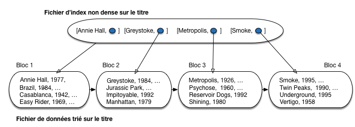
Fig. 3.1 Un index non dense¶
Si on désigne par \({c_1, c_2, \cdots, c_n}\) la liste ordonnée des clés dans l’index, il est facile de constater qu’un enregistrement dont la valeur de clé est \(c\) est stocké dans le bloc associé à la clé \(i\) telle que \(c_i \leq c < c_{i+1}\). Supposons que l’on recherche le film Shining. En consultant l’index on constate que ce titre est compris entre Metropolis et Smoke. On en déduit donc que Shining se trouve dans le même bloc que Metropolis dont l’adresse est donnée par l’index. Il suffit de lire ce bloc et d’y rechercher l’enregistrement. Le même algorithme s’applique aux recherches basées sur un préfixe de la clé (par exemple tous les films dont le titre commence par “V”).
Le coût d’une recherche dans l’index est considérablement plus réduit que celui d’une recherche dans le fichier principal. D’une part les enregistrements dans l’index (les entrées) sont beaucoup plus petits que ceux du fichier de données puisque seule la clé (et une adresse) y figurent. D’autre part l’index ne comprend qu’un enregistrement par bloc.
Exemple
Considérons l’exemple de notre fichier contenant un million de films. Il est constitué de 300 000 blocs. Supposons qu’un titre de films occupe 20 octets en moyenne, et l’adresse d’un bloc 8 octets. La taille de l’index est donc \(300\,000 * (20 + 8)\) = 8,4 Mo octets, à comparer aux 1,3 Go du fichier de données.
Le fichier d’index étant trié, il est bien entendu possible de recourir à une recherche par dichotomie pour trouver l’adresse du bloc contenant un enregistrement. Une seule lecture suffit alors pour trouver l’enregistrement lui-même.
Dans le cas d’une recherche par intervalle, l’algorithme est très semblable: on recherche dans l’index l’adresse de l’enregistrement correspondant à la borne inférieure de l’intervalle. On accède alors au fichier grâce à cette adresse et il suffit de partir de cet emplacement et d’effectuer un parcours séquentiel pour obtenir tous les enregistrements cherchés. La recherche s’arrête quand on trouve un enregistrement donc la clé est supérieure à la borne supérieure de l’intervalle.
Exemple
Supposons que l’on recherche tous les films dont le titre commence par une lettre entre “J” et “P”. On procède comme suit:
on recherche dans l’index la plus grande valeur strictement inférieure à “J”: pour l’index de la Fig. 3.1 c’est Greystoke;
on accède au bloc du fichier de données, et on y trouve le premier enregistrement avec un titre commençant par “J”, soit Jurassic Park;
on parcourt la suite du fichier jusqu’à trouver Reservoir Dogs qui est au-delà de l’intervalle de recherche: tous les enregistrements trouvés durant ce parcours constituent le résultat de la requête.
Le coût d’une recherche par intervalle peut être assimilé, si on néglige la recherche dans l’index, au parcours de la partie du fichier qui contient le résultat, soit \(\frac{r}{b}\), où \(r\) désigne le nombre d’enregistrements du résultat, et \(b\) le nombre d’enregistrements dans un bloc. Ce coût est optimal (on n’accède à aucun bloc qui ne participe pas au résultat).
Un index non dense est extrêmement efficace pour les opérations de recherche. Bien entendu le problème est de maintenir l’ordre du fichier au cours des opérations d’insertions et de destructions, problème encore compliqué par la nécessité de garder une étroite correspondance entre l’ordre du fichier de données et l’ordre du fichier d’index. Ces difficultés expliquent que ce type d’index soit peu utilisé par les SGBD, au profit de l’arbre-B qui offre des performances comparables pour les recherches par clé, mais se réorganise dynamiquement.
Index dense¶
Que se passe-t-il quand on veut indexer un fichier qui n’est pas trié sur la clé de recherche? On ne peut plus tirer parti de l’ordre des enregistrements pour introduire seulement dans l’index la valeur de clé du premier élément de chaque bloc. Il faut donc baser l’index sur toutes les valeurs de clé existant dans le fichier, et les associer à l’adresse d’un enregistrement, et pas à l’adresse d’un bloc. Un tel index est dense.
La Fig. 3.2 montre le même fichier contenant seize films, trié sur le titre, et indexé maintenant sur l’année de parution des films. On constate d’une part que toutes les années du fichier de données sont reportées dans l’index, ce qui accroît considérablement la taille de ce dernier, et d’autre part qu’à une même année sont associées plusieurs adresses correspondant aux films parus cette année là (l’index n’est pas unique).
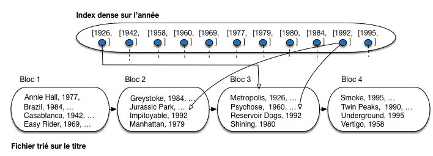
Fig. 3.2 Un index dense (tous les liens ne sont pas représentés)¶
Exemple
Considérons l’exemple de notre fichier contenant un million de films. Il faut créer une entrée d’index pour chaque film. Une année occupe 4 octets, et l’adresse d’un bloc 8 octets. La taille de l’index est donc \(1\,000\,000 * (4 + 8) =12\,000\,000\) octets, soit (seulement) cent fois moins que le fichier de données.
Un index dense peut coexister avec un index non-dense. Comme le suggèrent les deux exemples qui précèdent, on peut envisager de trier un fichier sur la clé primaire et créer un index non-dense, puis ajouter des index denses pour les attributs qui servent fréquemment de critère de recherche. On parle alors parfois d’index primaire et d’index secondaire, bien que ces termes soient moins précis (index plaçant et non plaçant serait plus rigoureux).
Il est possible en fait de créer autant d’index denses que l’on veut puisqu’ils sont indépendants de l’organisation du fichier de données. Cette remarque n’est plus vraie dans le cas d’un index non-dense puisqu’il s’appuie sur le tri du fichier et qu’un fichier ne peut être trié que d’une seule manière. Il ne peut y avoir qu’un seul index non-dense par fichier de données.
La recherche par clé ou par préfixe avec un index dense est similaire à celle déjà présentée pour un index non-dense. Si la clé n’est pas unique (cas des années de parution des films), il faut prendre garde à lire dans l’index toutes les adresses correspondant au critère de recherche. Par exemple, pour rechercher tous les films parus en 1992 dans l’index de la Fig. 3.2, on doit suivre les adresses pointant respectivement sur Jurassic Park, Impitoyable et Reservoir Dogs.
Notez que rien ne garantit que les films parus en 1992 sont situés dans le même bloc: on dit que l’index est non-plaçant. Cette remarque a surtout un impact sur les recherches par intervalle, comme le montre l’exemple suivant.
Exemple
Voici l’algorithme qui recherche tous les films parus dans l’intervalle [1950, 1979].
on recherche dans l’index la première valeur comprise dans l’intervalle: pour l’index de la Fig. 3.2 c’est
1958;on accède au bloc du fichier de données pour y prendre l’enregistrement Vertigo: notez que cet enregistrement est placé dans le dernier bloc du fichier;
on parcourt la suite de l’index, en accédant à chaque fois à l’enregistrement correspondant dans le fichier de données, jusqu’à trouver une année supérieure à 1979: on trouve successivement Psychose (troisième bloc), Easy Rider, Annie Hall (premier bloc) et Manhattan (deuxième bloc).
Pour trouver 5 enregistements, on a dû accéder aux quatre blocs, dans un ordre quelconque. C’est beaucoup moins efficace que de parcourir les 4 blocs du fichier en séquence. Le coût d’une recherche par intervalle est, dans le pire des cas, égale à \(r\) où r désigne le nombre d’enregistrements du résultat (soit une lecture de bloc par enregistrement). Il est intéressant de le comparer avec le coût \(\frac{r}{b}\) d’une recherche par intervalle avec un index non-dense: on a perdu le facteur de blocage obtenu par un regroupement des enregistrements dans un bloc.
Cet exemple montre qu’une recherche par intervalle entraîne des accès aléatoires aux blocs du fichier à cause de l’indirection inhérente à la structure. À partir d’un certain stade (rapidement en fait: le calcul peut se déduire de la petite analyse qui précède) il vaut mieux un bon parcours séquentiel qu’une mauvaise multiplication des accès directs.
Index multi-niveaux¶
Il peut arriver que la taille du fichier d’index
devienne elle-même si grande que les recherches
dans l’index en soit pénalisées. La solution naturelle est
alors d’indexer le fichier d’index lui-même.
Rappelons qu’un index est un fichier constitué
d’entrées [clé, adr], trié sur la
clé. Ce tri nous permet d’utiliser, dès le deuxième
niveau d’indexation, les principes des index non-denses:
on se contente d’indexer la première valeur de clé de chaque bloc.
Reprenons l’exemple de l’indexation des films sur l’année de parution. Nous avons vu que la taille du fichier était 100 fois moindre que celle du fichier de données. Même s’il est possible d’effectuer une recherche par dichotomie, cette taille peut devenir pénalisante pour les opérations de recherche.
On peut alors créer un deuxième niveau d’index,
comme illustré sur la Fig. 3.4.
On a supposé, pour la clarté de l’illustration, qu’un
bloc de l’index de premier niveau ne contient au plus que 3
entrées [année, adr]. Il faut donc quatre blocs
pour ce premier niveau d’index.
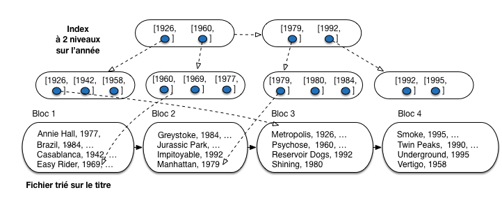
Fig. 3.3 Index avec 2 niveaux: le second indexe le premier, qui indexe le fichier¶
L’index de second niveau est construit sur la clé du premier enregistrement de chaque bloc de l’index de premier niveau. On diminue donc le nombre d’entrées par 3 (nombre d’enregistrements par bloc, ou facteur de blocage) entre le premier et le second niveau. On y gagne en espace: sur notre exemple, la taille est diminuée par deux. Dans un cas réel, le facteur de blocage est de quelques centaines (on met plusieurs centaines d’entrées d’index dans un bloc de 4 096 octets), et le taux de réduction d’un niveau à un autre est donc considérable.
Tout l’intérêt d’un index multi-niveaux est de pouvoir passer, dès le second niveau, d’une structure dense à une structure non-dense. Si ce n’était pas le cas on n’y gagnerait rien puisque tous les niveaux auraient la même taille que le premier.
Peut-on créer un troisième niveau, un quatrième niveau? Oui, bien sûr. Quand s’arrête-t-on? Et bien, si on se souvient que la granularité de lecture est le bloc, on peut dire que quand un niveau d’index tient dans un seul bloc, il est inutile d’aller plus loin.
Pour notre exemple, on peut créer un troisième niveau, illustré par la Fig. 3.4. Ce troisième niveau est constitué d’un seul bloc. Comme on ne peut pas faire un fichier plus petit, on arrête là.
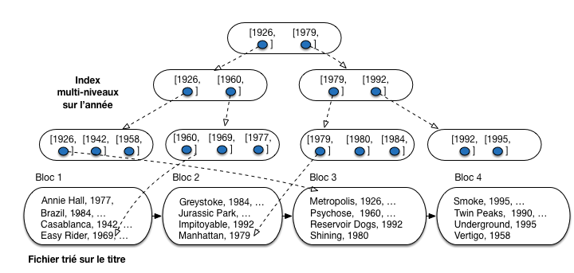
Fig. 3.4 Index multi-niveaux¶
Une recherche, par clé ou par intervalle, part toujours du niveau le plus élevé, et reproduit d’un niveau à l’autre les procédures de recherches présentées précédemment. Pour une recherche par clé, le coût est égal au nombre de niveaux de l’arbre.
Exemple
On recherche le ou les films parus en 1980, avec l’index de la Fig. 3.4.
Partant du troisième niveau d’index, on décide qu’il faut descendre vers la droite pour accéder au second bloc du deuxième niveau d’index.
Le contenu de ce second bloc nous indique qu’il faut cette fois descendre vers la gauche, vers le troisième bloc du premier niveau d’index.
On trouve dans ce troisième bloc l’entrée correspondant à 1980, avec les adresses des films à aller chercher dans le fichier de données.
Les index multi-niveaux sont très efficaces en recherche, et ce même pour des jeux de données de très grande taille. Le problème est, comme toujours, la difficulté de maintenir des fichiers compacts et triés. L’arbre-B, étudié dans la section qui suit, représente l’aboutissement des idées présentées jusqu’ici, puisqu’à des performances équivalentes à celles des index séquentiels en recherche, il ajoute des algorithmes de réorganisation dynamique qui résolvent la question de la maintenance d’une structure triée.
Quiz¶
Qu’appelle-t-on une entrée d’index?

Combien d’index non denses peut-on créer sur un fichier de données
Quel est le type d’index adapté à un dictionnaire?
La clé d’indexation de mon index est la paire (titre, année). Quelles requêtes sur la table des films permettent d’utiliser l’index (plusieurs réponses possibles).
Que reste-t-il à faire après avoir effectué une recherche dans un fichier d’index?
Quel est l’inconvénient d’une recherche par intervalle avec un index?
Pourquoi s’arrêter quand la racine d’un index multi-niveaux contient un seul bloc?

{kind=link}
{kind=link}
{kind=link}
{kind=link}
S2: L’arbre-B¶
Supports complémentaires:
L’arbre-B est une structure très proche des index présentés ci-dessus. La principale différence est que la granularité de construction de l’index n’est plus un fichier représentant un niveau monolithique, mais un bloc. Cette granularité minimale permet notamment une réorganisation efficace de l’arbre pour s’adapter aux évolutions du fichier de données indexé.
Commençons par une notion technique, celle d’ordre d’un arbre B.
Définition: Ordre d’un arbre B.
Si un bloc peut contenir au maximum \(n\) entrées, alors l’ordre de l’arbre B est \(\lfloor\frac{n}{2} \rfloor\). L’ordre d’un arbre B correspond au nombre minimal d’entrées contenues dans chacun des blocs, propriété qui résulte de l’algorithme de construction que nous étudierons plus loin.
L’ordre d’un arbre dépend de la taille de la clé et se détermine simplement par le calcul suivant. Soit \(||c||\) la taille de la clé à indexer (en prendra une moyenne pour les clés de taille variable), \(||A||\) la taille d’une adresse et \(||B||\) l’espace utile d’un bloc (en excluant l’entête), alors le nombre maximum d’entrées \(n\) est
Et l’ordre est \(\lfloor\frac{n}{2} \rfloor\). Rappelons que la notation \(\lfloor x \rfloor\) désigne la partie entière de \(x\).
Reprenons l’exemple de notre fichier contenant un million de films. Admettons qu’une entrée d’index occupe 12 octets, soit 8 octets pour l’adresse, et 4 pour la clé (l’année du film). Chaque bloc contient 4 096 octets. On place donc \(\lfloor \frac{4096}{12} \rfloor = 341\) entrées au maximum dans un bloc et l’ordre de cet index est \(\lfloor\frac{341}{2} \rfloor = 170\).
À partir de maintenant, nous supposons que le fichier des données stocke séquentiellement les enregistrements dans l’ordre de leur création et donc indépendamment de tout ordre lexicographique ou numérique sur l’un des attributs. C’est la situation courante, car la plus facile à gérer (et la plus rapide) au moment des insertions. Nous allons indexer ce fichier avec un ou plusieurs arbres B.
Structure de l’arbe B¶
La Fig. 3.5 montre un arbre-B indexant notre collection de 16 films, avec pour clé d’indexation l’année de parution du film. L’index est organisé en blocs de taille égale, ce qui ajoute une souplesse supplémentaire à l’organisation en niveaux étudiée précédemment. En pratique un bloc peut contenir un grand nombre d’entrées d’index (plusieurs centaines, voir plus loin), mais pour la clarté de l’illustration nous supposerons que l’on peut stocker au plus 4 entrées d’index dans un bloc.
{kind=link}
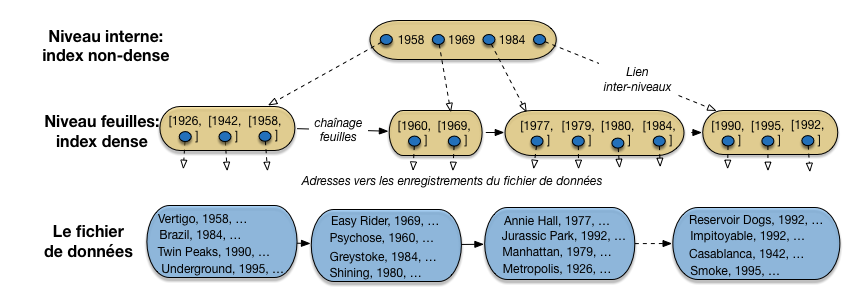
Fig. 3.5 Un arbre B construit sur l’année des films¶
L’index a une structure arborescente constituée de plusieurs niveaux (en l’occurence seulement 2). Le niveau le plus bas, celui des feuilles, constitue un index dense sur le fichier de données. Le concept d’index dense a été présenté précédemment: toutes les valeurs de clé de la collection indexée y sont représentées. De plus, elles sont ordonnées, alors que l’on peut constater qu’il n’existe aucun ordre correspondant dans le fichier de données.
En revanche, contrairement aux fichiers d’index traditionnels, le niveau des feuilles de l’arbre B n’est pas constitué d’une séquence contiguë de blocs, mais d’une liste chaînée de blocs. Chaque bloc-feuille référence le bloc-feuille suivant, ce qui permet de parcourir ce niveau, en suivant le chaînage, sans avoir à remonter dans l’arbre. Cette organisation est moins efficace qu’un stockage continu (le passage d’un bloc à un autre peut entraîner un déplacement des têtes de lecture), mais permet la réorganisation dynamique de la liste pour y insérer de nouveaux blocs, comme nous le verrons plus loin.
Dans chaque bloc, au niveau des feuilles, on trouve des entrées d’index, soit une paire constituée d’une valeur de clé et d’une adresse vers un enregistrement du fichier de données.
Note
Comme plusieurs films ont pu paraître la même année, on peut trouver des entrées avec plusieurs adresses associées à une valeur de clé. On pourrait aussi trouver plusieurs entrées avec la même valeur de clé. Ce choix d’implantation ne remet pas en question la structure de l’index, que nous continuons à décrire.
Les niveaux de l’arbre B situés au-dessus des feuilles (sur notre exemple il n’y en a qu’un) sont les niveaux internes. Ils sont eux aussi constitués de blocs indépendants, mais sans chaînage associant les blocs d’un même niveau. Chaque bloc interne sert d’index local pour se diriger, de bas en haut, dans la structure de l’arbre, vers la feuille contenant les valeurs de clé recherchées.
Regardons notre unique niveau interne, qui est également la racine de l’arbre. C’est un index non dense, avec des valeurs de clés triées, et des adresses qui s’interprètent de la manière suivante.
dans le sous-arbre référencé par l’adresse située à gauche de 1958, on ne trouve que des films parus avant (au sens large) 1958;
dans le sous-arbre référencé par l’adresse située entre 1958 et 1969, on ne trouve que des films parus après (au sens strict) 1958 et avant (au sens large) 1969;
dans le sous-arbre référencé par l’adresse située entre 1969 et 1984, on ne trouve que des films parus après (au sens strict) 1969 et avant (au sens large) 1984;
enfin, la dernière adresse référence un sous-arbre contenant tous les films parus strictement après 1984.
Chaque bloc d’un nœud interne divise donc l’espace de recherche en 4. Si on a un niveau d’index, on va donc, en consultant un bloc de ce niveau, réduire par 4 la taille des données à explorer. Si on a deux niveaux, on réduit d’abord par 4, puis encore par 4, soit \(4^2=16\). Si on a k niveaux, on réduit par \(4^k\). Si, de manière encore plus générale, on désigne par n le nombre d’entrées que l’on peut stocker dans un bloc, la « réduction » apportée par l’index devient \(n^k\).
Sur notre exemple de 16 films, avec un seul niveau d’index, et très peu d’entrées par bloc, c’est évidemment assez peu spectaculaire, mais dans des conditions plus réalistes, on obtient une structure extrêmement efficace. Effectuons quelques calculs pour nous en convaincre.
Exemple: indexons un million de films sur l’année.
Reprenons l’exemple de notre fichier contenant un million de films. Admettons qu’une entrée d’index occupe 12 octets, soit 8 octets pour l’adresse, et 4 pour la clé (l’année du film). Chaque bloc contient 4 096 octets.
On place donc \(\lfloor \frac{4096}{12} \rfloor = 341\) entrées (au maximum) dans un bloc. Comme le niveau des feuilles de l’abre B est dense, il faut \(\lceil \frac{1000000}{341} \rceil=2\,933\) blocs pour le niveau des feuilles.
Le deuxième niveau est non dense. Il comprend autant d’entrées que de blocs à indéxer, soit \(2\,933\). Il faut donc \(\lceil\frac{2\,933}{341} \rceil = 9\) blocs (au mieux). Finalement, un troisième niveau, constitué d’un bloc avec 9 entrées suffit pour compléter l’index.
Important
Le calcul précédent est valable dans le meilleur des cas, celui où chaque bloc est parfaitement plein. Mais alors quel est le pire des cas? La réponse est que l’arbre B garantit que chaque bloc est au moins à moitié plein, et donc le pire des cas sur notre exemple serait un remplissage avec 170 entrées (la moitié de 341) par bloc. Cette (excellente) propriété de remplissage est une conséquence de la méthode de construction de l’index, présentée un peu plus loin.
Voici, réciproquement, une petite extrapolation montrant le nombre de films indexés en fonction du nombre de niveaux dans l’arbre (même remarque que précédemment: on calcule dans le meilleur des cas, en supposant qu’un bloc est toujours plein.)
avec un niveau d’index (la racine seulement) on peut donc indexer 341 films;
avec deux niveaux la racine indexe 341 blocs d’index, référençant chacun 341 films, soit \(341^2 = 116\,281\) films indexés au total;
avec trois niveaux on indexe \(341^3 = 39\,651\,821\) films;
enfin avec quatre niveaux on indexe plus de 1 milliard de films.
Il y a donc une croissance très rapide, exponentielle, du nombre d’enregistrements indexés en fonction du nombre de niveaux et, réciproquement, une croissance très faible, logarithmique du nombre de niveaux en fonction du nombre d’enregistrements.
Le calcul précis est donné par la formule suivante (on suppose que les clés sont uniques, le lecteur peut faire lui-même l’extension de la formule au cas des index non uniques). On note \(||T||\) la cardinalité d’une table \(T\) (nombre d’enregistrements), et \(k\) l’ordre de l’arbre B. Alors la hauteur \(h\) de l’arbre est donnée par
Il s’agit d’un calcul théorique qui peut, en pratique, être optimisé par diverses techniques, et notamment des méthodes de compression de valeurs de clé que nous ne présentons pas ici. La formule ci-dessus doit donc être considérée comme donnant un ordre de grandeur.
L’efficacité d’un arbre-B dépend entre autres de la taille de la clé: plus celle-ci est petite, et plus l’index sera petit et efficace. Si on indexait les films sur le titre, un chaîne de caractères occupant en moyenne quelques dizaines d’octets (disons, 20), on pourrait référencer \(\lfloor \frac{4096}{20 + 8} \rfloor = 146\) films dans un bloc, et un index avec trois niveaux permettrait d’indexer \(146^3= 3\,112\,136\) films! Du point de vue des performances, le choix d’une chaîne de caractères assez longue comme clé des enregistrements est donc assez défavorable.
Construction de l’arbre B¶
Voyons maintenant comment le système maintient un arbre-B sur un fichier (une table) sans organisation particulière: les enregistrements sont placés les uns après les autres dans l’ordre de leur insertion, dans une structure dite séquentielle. Nous construisons un arbre B sur le titre des films.
Nous avons donc deux fichiers (ou, de manière un peu plus abstraite, deux espaces de stockage indépendants, nommés segments dans ORACLE par exemple): la table et l’index. Le premier a une structure séquentielle et contient les enregistrements représentant les lignes de la table. On va supposer pour la facilité de la présentation que l’on peut mettre 4 enregistrements par bloc. Le second fichier a une structure d’arbre B, et ses blocs contiennent les entrées de l’index. On va supposer pour l’illustration que l’on met au plus deux entrées par bloc. C’est tout à fait irréaliste, comme l’ont montré les calculs précédents, mais cela permet de bien comprendre la méthode.
La Fig. 3.6 montre la situation initiale, avec les deux structures, la seconde indexant la première, après l’insertion des deux premiers films. L’arbre est pour l’instant constitué d’un unique bloc avec deux entrées (il est donc déjà plein d’après notre hypothèse).
{kind=link}
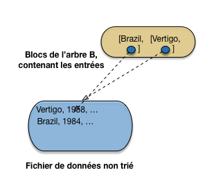
Fig. 3.6 Début de la construction, 2 films seulement¶
On insère ensuite Twin Peaks. Pas de problème pour l’enregistrement dans la table, qui vient se mettre à la suite des autres dans le fichier de données. Il faut également insérer l’entrée correspondante, et, d’après notre hypothèse, l’unique bloc de l’arbre B est plein (Fig. 3.7).
{kind=link}
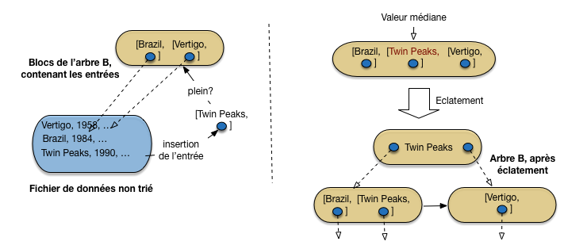
Fig. 3.7 Après insertion d’un troisième film, et premier éclatement¶
Il faut ajouter un nouveau bloc à l’index, en conservant la structure globale de l’arbre. L’ajout d’un bloc suit une procédure dite d’éclatement qui est illustrée sur la partie de droite de la Fig. 3.7. En voici les étapes
les entrées du bloc trop plein sont triées sur la valeur de la clé
l’entrée correspondant à la valeur médiane est placée dans un nouveau bloc, au niveau supérieur (ce nouveau bloc est donc un nœud interne)
les entrées inférieures à la valeur médiane sont dans un bloc à gauche; les entrées supérieures à la valeur médiane sont dans un bloc à droite
On aboutit à l’arbre en bas à droite de la Fig. 3.7. C’est déjà un arbre B avec sa racine, qui est un nœud interne, et deux feuilles indexant de manière dense le fichier de données.
Important
Comme le niveau des feuilles est dense, on laisse toujours, quand on éclate une feuille, l’entrée de la valeur médiane dans le bloc de gauche, en plus d’insérer une entrée avec cette valeur médiane dans le bloc de niveau supérieur. Ici, la valeur Twin Peaks apparaît donc dans deux entrées: celle des feuilles référence l’enregistrement du film, celle du bloc interne référence la feuille de l’index.
Continuons avec les insertions de Underground, puis de Easy Rider (Fig. 3.8). Les enregistrements sont placés séquentiellement dans le fichier de données. Pour les entrées d’index, on doit déterminer dans quelle feuille on insère. Pour cela on part de la racine, et on suit les adresses comme si on recherchait un enregistrement pour la valeur de clé à insérer.
Dans notre cas, Underground étant supérieur dans l’ordre lexicographioque à Twin Peaks, va à droite, et Easy Rider va à gauche.
{kind=link}
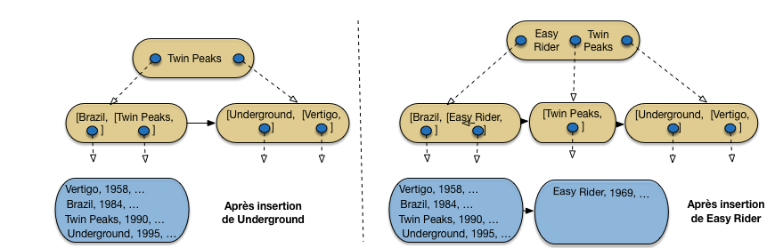
Fig. 3.8 Après insertion de Underground, puis de Easy Rider¶
Underground vient donc prendre place dans la feuille de droite, qui ne déborde pas encore. En revanche, Easy Rider doit aller dans la feuille de gauche, qui devient trop pleine. Un éclatement a lieu, l’entrée correspondant à la valeur médiane (Easy Rider) est transmise au niveau supérieur qui indexe donc les trois blocs de feuilles.
On continue avec Psychose, puis Greystoke (Fig. 3.9). Tous deux vont dans le bloc contenant initialement Twin Peaks, ce qui entraîne un débordement. La valeur médiane, Psychose, doit donc être insérée dans la racine de l’arbre B.
{kind=link}
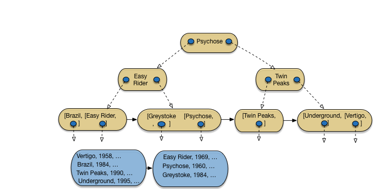
Fig. 3.9 Après insertion de Psychose et Greystoke¶
Nous avons donc maintenant le cas d’un nœud interne qui déborde à son tour. On applique la même procédure d’éclatement, avec identification de la valeur médiane, et insertion d’une entrée avec cette valeur dans le bloc parent. Ici, on crée une nouvelle racine, en augmentant donc de 1 le nombre de niveaux de l’arbre. On obtient l’arbre de la Fig. 3.9.
Important
Quand on éclate un bloc interne, il est inutile de conserver la valeur médiane dans les blocs du niveau inférieur. Rappelons que l’indexation des blocs internes est non dense et qu’il n’est donc pas nécessaire de représenter toutes les valeurs de clés, contrairement aux feuilles.
Et ainsi de suite. La Fig. 3.10 montre l’arbre B après insertion de Shining et Annie Hall, et la Fig. 3.11 l’arbre après insertion de 12 films sur 16: je vous laisse compléter avec les 4 films restant, soit Reservoir Dogs, Impitoyable, Casablannca et Smoke.
{kind=link}
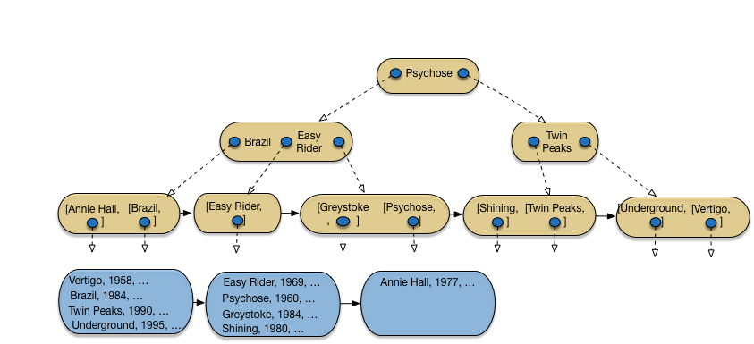
Fig. 3.10 Après insertion de Shining et Annie Hall¶
{kind=link}
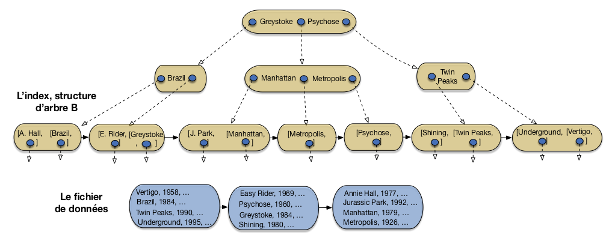
Fig. 3.11 Après insertion de Jurassic Park, Manhattan et Metropolis¶
La méthode illustrée ici montre tout d’abord une propriété importante, déja évoquée: chaque bloc de l’arbre B (sauf la racine) est au moins à moitié plein. C’est une propriété obtenue par construction: un éclatement n’intervient que quand un bloc est plein, cet éclatement répartit les entrées en deux sous-ensembles de taille égale, et les deux blocs résultant d’un éclatement sont donc à moitié plein, avant de recevoir de nouvelles entrées avec les insertions ultérieures. On constate en pratique que le taux de remplissage est d’environ 70%.
La seconde remarque importante tient à l’aspect dynamique de la construction, illustrée ici. Une insertion dans un arbre B peut déclencher des réorganisations qui restent locales, en d’autres termes elles n’affectent qu’un partie minimale de la structure globale. C’est ce qui rend l’évolution de l’index fluide, sans nécessité d’introduire une coûteuse opération périodique de réorganisation globale.
Recherches avec un arbre-B¶
L’arbre B supporte des opérations de recherche par clé, par préfixe de la clé et par intervalle.
Recherche par clé¶
Prenons l’exemple suivant:
select *
from Film
where titre = 'Manhattan'
En l’absence d’index, la seule solution est de parcourir le fichier. Dans l’exemple de la Fig. 3.11, cela implique de lire inutilement 10 films avant de trouver Manhattan qui est en onzième position. L’index permet de trouver l’enregistrement beaucoup plus rapidement.
on lit la racine de l’arbre: Manhattan étant situé dans l’ordre lexicographique entre Easy Rider et Psychose, on doit suivre le chaînage situé entre ces deux titres;
on lit le bloc interne intermédiaire: la feuille contenant Manhattan est dans l’arbre situé à gauche de l’entrée d’index Manhattan, on suit donc le chaînage de gauche;
on lit le bloc feuille dans lequel on trouve l’entrée Manhattan contenant l’adresse de l’enregistrement dans le fichier des données;
il reste à lire l’enregistrement.
Donc quatre lectures sont suffisantes: trois dans l’index, une dans le fichier de données. Plus généralement, le nombre de lectures (logiques) nécessaires pour une recherche par clé est égal au nombre de niveaux de l’arbre, plus une lecture (logique) pour accéder au fichier de données.
Important
Ce sont des lectures logiques par opposition aux lectures physiques qui impliquent un accès disque. En pratique, un index souvent utilisé réside en mémoire, et le parcours est très rapide.
Prenons le cas plus réaliste de notre fichier avec un million de film. Nous avons déjà calculé qu’il était possible de l’indexer avec un arbre B à trois niveaux. Quatre lectures (trois pour l’index, un pour l’enregistrement) suffisent pour une recherche par clé, alors qu’il faudrait parcourir les 300 000 blocs d’un fichier en l’absence d’index.
Le coût d’une recherche par clé étant proportionnel au nombre de niveaux et pas au nombre d’enregistrements, l’indexation permet d’améliorer les temps de recherche de manière vraiment considérable. La création d’un index peut faire passer le temps de réponse dune requête de quelques secondes ou dizaines de secondes à quelques micro secondes.
Recherche par intervalle¶
Un arbre-B permet également d’effectuer des recherches par intervalle. Le principe est simple: on effectue une recherche par clé pour la borne inférieure de l’intervalle. On obtient la feuille contenant cette borne inférieure. Il reste à parcourir les feuilles de l’arbre, grâce au chaînage des feuilles, jusqu’à ce que la borne supérieure ait été rencontrée ou dépassée. Voici une recherche par intervalle:
select *
from Film
where annee between 1960 and 1975
On peut utiliser l’index sur les années (Fig. 3.5) pour répondre à cette requête. Tout d’abord on fait une recherche par clé pour l’année 1960. On accède alors à la seconde feuille dans laquelle on trouve la valeur 1960 associée à l’adresse du film correspondant (Psychose) dans le fichier des données.
On parcourt ensuite les feuilles en suivant le chaînage indiqué en pointillés. On accède ainsi successivement aux valeurs 1969, 1977 (dans la troisième feuille) puis 1979. Arrivé à ce point, on sait que toutes les valeurs suivantes seront supérieures à 1979 et qu’il n’existe donc pas de film paru en 1975 dans la base de données. Toutes les adresses des films constituant le résultat de la requête ont été récupérées: il reste à lire les enregistrements dans le fichier des données.
C’est ici que les choses se gâtent: jusqu’à présent chaque lecture d’un bloc de l’index ramenait un ensemble d’entrées pertinentes pour la recherche. Autrement dit on bénéficiait du « bon » regroupement des entrées: les clés de valeurs proches – donc susceptibles d’être recherchées ensembles – sont proches dans la structure. Dès qu’on accède au fichier de données ce n’est plus vrai puisque ce fichier n’est pas organisé de manière à regrouper les enregistrements ayant des valeurs de clé proches.
Dans le pire des cas, comme nous l’avons souligné déjà pour les index simples, il peut y avoir une lecture de bloc pour chaque lecture d’un enregistrement. L’accès aux données est alors de loin la partie la plus pénalisante de la recherche par intervalle, tandis que le parcours de l’arbre-B peut être considéré comme néligeable.
Recherche par préfixe¶
Enfin l’arbre-B est utile pour une recherche avec un préfixe de la clé: il s’agit en fait d’une variante des recherches par intervalle. Prenons l’exemple suivant:
select *
from Film
where titre like 'M%'
On veut donc tous les films dont le titre commence par “M”. Cela revient à faire une recherche par intervalle sur toutes les valeurs comprises, selon l’ordre lexicographique, entre le “M” (compris) et le “N” (exclus). Avec l’index, l’opération consiste à effectuer une recherche par clé avec la lettre “M”, qui mène à la seconde feuille ( Fig. 3.11) dans laquelle on trouve le film Manhattan. En suivant le chaînage des feuilles on trouve le film Metropolis, puis Psychose qui indique que la recherche est terminée.
Le principe est généralisable à toute recherche qui peut s’appuyer sur la relation d’ordre qui est à la base de la construction d’un arbre B. En revanche une recherche sur un suffixe de la clé (« tous les films terminant par “S” ») ou en appliquant une fonction ne pourra pas tirer parti de l’index et sera exécutée par un parcours séquentiel. C’est le cas par exemple de la requête suivante:
select *
from Film
where titre like '%e'
Ici on cherche tous les films dont le titre se finit par “e”. Ce critère n’est pas compatible avec la relation d’ordre qui est à la base de la construction de l’arbre, et donc des recherches qu’il supporte.
Le temps d’exécution d’une requête avec index peut s’avérer
sans commune mesure avec celui d’une recherche sans index, et il est donc très
important d’être conscient des situations où le SGBD pourra
effectuer une recherche par l’index. Quand il y a un doute, on peut
demander des informations sur la manière dont la requête
est exécutée (le « plan d’exécution ») avec les outils
de type « explain ». Nous y reviendrons dans le chapitre sur l’évaluation
de requêtes.
Création d’un arbre B¶
Un arbre-B est créé sur une table, soit
implicitement par la commande create index, soit explicitement
avec l’option primary key. Voici les commandes classiques:
la création de la table, avec création de l’index pour assurer
l’unicité de la clé primaire.
create table Film (titre varchar(30) not null,
...,
primary key (titre)
);
Et la création d’un second index, non unique, sur l’année.
create index filmAnnee on Film (année)
Note
La création de l’index sur la clé primaire (et parfois sur la clé étrangère) est très utile pour vérifier la satisfaction des contraintes de clé ainsi que, nous le verrons, pour le calcul des jointures. Voir l’exercice ex-arbreb6.
Un SGBD relationnel effectue automatiquement les opérations nécessaires au maintien de la structure: insertions, destructions, mises à jour. Quand on insère un film, il y a donc également insertion d’une nouvelle valeur dans l’index des titres et dans l’index des années. Ces opérations peuvent être assez coûteuses, et la création d’un index, si elle optimise des opérations de recherche, est en contrepartie pénalisante pour les mises à jour.
Propriétés de l’arbre B¶
L’arbre B est une structure arborescente qui a les propriétés suivantes:
l’arbre est équilibré, tous les chemins de la racine vers les feuilles ont la même longueur;
chaque nœud (sauf la racine) est un bloc occupé au moins à 50% par des entrées de l’index;
une recherche s’effectue par une simple traversée en profondeur de l’arbre, de la racine vers les feuilles;
Le coût des opérations avec l’arbre B est est logarithmique dans la taille des données, alors qu’une recherche sans index est linéaire. Mais au-delà de cette analyse, l’important est que cela correspond, en pratique, à des gains de performance considérables.
L’arbre B exploite bien l’espace, a de très bonnes performances, et se réorganise automatiquement et à coût minimal. Ces qualités expliquent qu’il soit systématiquement utilisé par tous les SGBD, notamment pour indexer la clé primaire des tables relationnelles.
Quiz¶
Combien peut-on créer d’index en forme d’arbre B sur une table?
Indiquer quelles affirmations sont vraies
Le chaînage des feuilles est utile pour (une seule réponse)
La capacité maximale d’un bloc de mon arbre est de 10 entrées. Un bloc est toujours au moins à moitié plein (on va supposer que c’est vrai aussi pour la racine). Quel est le nombre d’enregistrements que je peux indexer avec un arbre à 2 niveaux?
À propos de l’éclatement, que peut-on dire?
Parmi les phrases suivantes, lesquelles décrivent correctement l’algorithme d’insertion d’une entrée dans un arbre B
La recherche pour une valeur de clé, dans un arbre B
Quel est l’inconvénient d’une recherche par intervalle avec un arbre B
Exercices¶
Exercice ex-dense-nondense: index dense ou non-dense
Soit un fichier de données tel que chaque bloc peut contenir 10 enregistrements. On indexe ce fichier avec un niveau d’index, et on suppose qu’un bloc d’index contient 100 entrées [valeur, adresse].
Si n est le nombre d’enregistrements, donnez le nombre minimum de blocs en fonction de n pour un index dense et un index non-dense.
Correction
Le fichier est constitué d’au moins \(\frac{n}{10}\) blocs. Un index dense contient n entrées et occupe donc \(\frac{n}{100}\) blocs. Pour un index non-dense il faut seulement \(\frac{n}{10}\) entrées donc \(\frac{n}{1000}\) blocs.
Exercice ex-construction: construction d’un arbre B
Soit la liste des départements suivants, à lire de gauche à droite et de haut en bas.
3 Allier; 36 Indre; 18 Cher; 75 Paris 39 Jura; 9 Ariège; 81 Tarn; 11 Aude 12 Aveyron; 25 Doubs; 73 Savoie; 55 Meuse; 15 Cantal; 51 Marne; 42 Loire; 40 Landes 14 Calvados; 30 Gard; 84 Vaucluse; 7 ArdècheQuestions:
Construire, en prenant comme clé le numéro de département, un index dense à deux niveaux sur le fichier contenant les enregistrements dans l’ordre indiqué ci-dessus, en supposant 2 enregistrements par bloc pour les données, et 8 par bloc pour l’index.
Construire un index non-dense sur le fichier trié par numéro, avec les mêmes hypothèses.
Construire un arbre-B sur les numéros de département, en supposant qu’il y a au plus 4 entrées par bloc dans l’index, et en insérant les enregistrements dans l’ordre donné ci-dessus.
Construire un arbre-B sur les noms de département, en supposant qu’il y a au plus 4 entrées par bloc dans l’index, et en insérant les enregistrements dans l’ordre donné ci-dessus.
Correction
Voir la Fig. 3.12. Notez que deux entrées proches dans l’index (3 et 7) peuvent référencer des enregistrements très distincts
{kind=link}
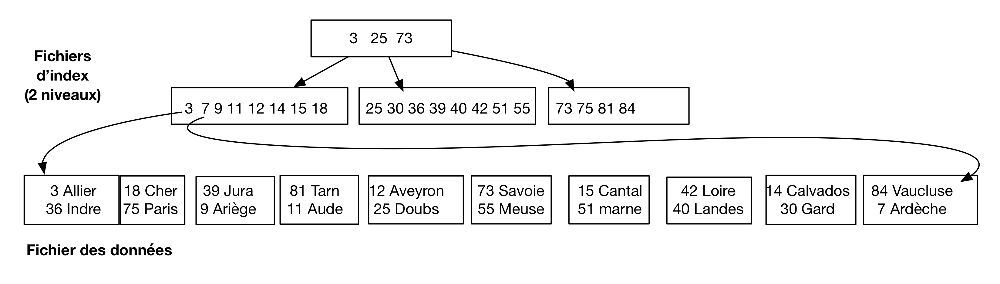
Fig. 3.12 L’index dense à deux niveaux.¶
La Fig. 3.13 montre l’arbre B sur les numéros, après l’insertion du 42. Le complément est laissé à titre d’exercice. Les différents types de pointeurs sont montrés avec des graphies distinctes: trait plein pour le liens entre niveaux, trtait plein, tête blanche pour les liens des feuilles, traits pointillés pour les liens entre index et données.
{kind=link}
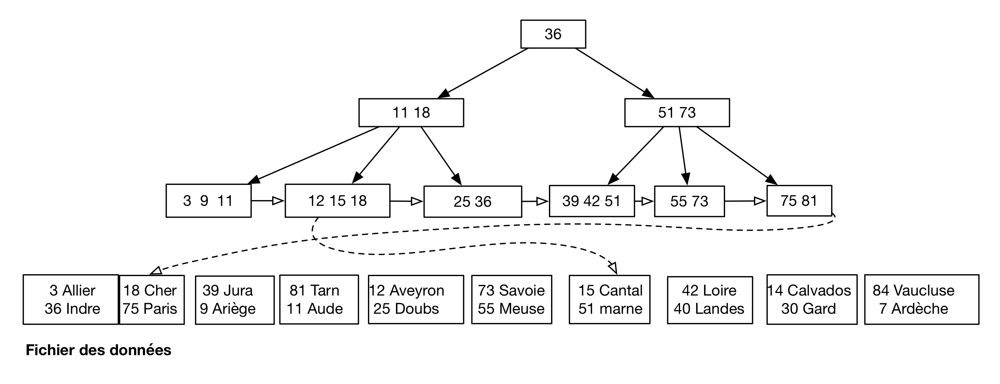
Fig. 3.13 L’arbre B sur les numéros (jusqu’au 42, à compléter)¶
Exercice ex-arbreb1: propriétés d’un arbre B
Soit un fichier de 1 000 000 enregistrements répartis en blocs de 4 096 octets. Chaque enregistrement fait 45 octets et il n’y a pas de chevauchement de blocs. Répondez aux questions suivantes en justifiant vos réponses (on suppose que les blocs sont pleins).
Combien faut-il de blocs? Quelle est la taille du fichier?
Quelle est la taille d’un index de type arbre-B si la clé fait 32 octets et une adresse 8 octets? Détaillez le calcul niveau par niveau.
Même question si la clé fait 4 octets.
Si on suppose qu’une lecture coûte 10 ms, quel est le coût moyen d’une recherche d’un enregistrement par clé unique, avec index et sans index dans le pire des cas?
Exercice ex-arbreb2: hauteur et efficacité d’un arbre B
On reprend les hypothèses précédentes, et on indexe maintenant le fichier avec un arbre-B dont chaque bloc peut contenir au maximum 100 entrées. Les feuilles de l’arbre contiennent des entrées référençant des enregistrements dans le fichier, et les nœuds internes contiennent des entrées référençant d’autres nœuds.
Quel est l’ordre de cet arbre B et quel est sa hauteur théorique obtenue par la formule donnée en cours?
On suppose maintenant qu’un bloc d’arbre B est plein à 70% et contient donc 70 entrées pour un fichier de 1 000 000 d’enregistrements. En effectuant un calcul niveau par niveau, donnez (1) le nombre de blocs du niveau des feuilles, (2) le nombre minimal de blocs utilisés par la fichier et l’index, (3) le nombre de niveaux de l’arbre , (4) le nombre de lectures pour rechercher un enregistrement par sa clé.
On effectue maintenant une recherche par intervalle ramenant 1 000 enregistrements. Décrivez la recherche et donnez le nombre de lectures dans le pire des cas.
Correction
L’ordre de cet arbre B est 50. En appliquant la formule \(\lceil log_{50} (10^6) \rceil\) on trouve une hauteur théorique de 4.
Le niveau des feuilles de l’arbre B indexe un million d’enregistrements, il est donc stocké sur \(\lceil \frac{10^6}{70} \rceil = 14 286\) blocs. Le niveau indexant les feuilles est non dense et contient donc 14 286 entrées qui sont stockées (toujours à 70 entrées par nœud) dans 204 blocs. Il faut encore 3 blocs au niveau supérieur, et 1 bloc pour la racine. Il y a donc \(14\,286+204+3+1\) blocs dans l’arbre B` plus au moins 100 000 blocs de données.
On trouve bien 4 niveaux d’index. Il faut donc lire 4+1 blocs pour accéder à un enregistrement par sa clé.
Pour une recherche par intervalle on parcourt d’abord l’arbre jusqu’à trouver l’entrée au niveau des feuilles qui correspond à la borne inférieure de l’intervalle (4 blocs à lire). Il faut ensuite lire 1 000 entrées, soit \(\lceil \frac{1000}{70} \rceil = 15\) blocs en parcourant le niveau des feuilles de l’arbre. Pour chaque adresse des 1 000 entrées il faut lire un bloc dans le pire des cas, soit 1 000 blocs. Total: 1018 blocs. Le coût (théorique) des accés aléatoires au fichier de données est le plus pénalisant.
Exercice ex-arbreb3: encore des calculs sur l’arbre B
Un arbre B indexe un fichier de 300 enregistrements.
Dans un premier temps, on suppose que l’ordre de l’arbre est de 5. Chaque nœud stocke donc au plus 10 entrées. Quelle est la hauteur minimale de l’arbre et sa hauteur maximale? (Un arbre constitué uniquement de la racine a pour hauteur 0).
Inversement, on ignore l’ordre de l’arbre mais on constate qu’il a deux niveaux. Quel est l’ordre maximal compatible avec cette constatation? Et l’ordre minimal?
Exercice ex-arbreb4: indexation des séquences
On indexe une table par un arbre B+ sur un identifiant dont les valeurs sont fournies par une séquence. À chaque insertion un compteur est incrémenté et fournit la valeur de clé de l’enregistrement inséré.
On suppose qu’il n’y a que des insertions dans la table. Montrez que tous les nœuds de l’index qui ont un frère droit sont exactement à moitié pleins.
Correction
Au moment d’un éclatement, on se retrouve avec deux blocs remplis à moitié. Celui qui a un frère droit ne contient que des valeurs de clés inférieures à celui de ce frère droit. Comme on n’insère que des valeurs supérieures à toutes celles existantes, un nœud qui a un frère droit ne sera jamais modifié.
Exercice ex-arbreb5: index ou parcours séquentiel?
Soit un fichier non trié contenant n enregistrements de 81 octets chacun. Il est indexé par un arbre-B, comprenant 3 niveaux, chaque entrée dans l’index occupant 20 octets. On utilise des blocs de 4 096 octets, sans entête, et on suppose qu’ils sont remplis à 100% pour le fichier et à 70% pour l’index.
On veut effectuer une recherche par intervalle dont on estime qu’elle va ramener m enregistrements. On suppose que tous les blocs sont lus sur le disque pour un coût uniforme.
Donnez la fonction de n et m exprimant le nombre de lectures à effectuer pour cette recherche avec un parcours séquentiel.
Donnez la fonction exprimant le le nombre de lectures à effectuer en utilisant l’index.
À partir de quelle valeur de m la recherche séquentielle devient-elle préférable à l’utilisation de l’index, en supposant un temps d’accès uniforme pour chaque bloc?
En déduire le pourcentage d’enregistrements concernés par la recherche à partir duquel le parcours séquentiel est préférable. On pourra simplifier les équations en éliminant les facteurs qui deviennent négligeables pour des grandes valeurs de n et de m.
Correction
Nombre d’enregistrements dans chaque bloc: \(\lfloor 4096/81 \rfloor = 50\). Nombre de blocs du fichier: \(\lceil \frac{n}{50} \rceil\). Il faut lire tout le fichier pour une recherche par intervalle.
Pour une rercherche avec l’index, il faut lire la racine de l’arbre, puis un bloc du niveau intermédiaire, avant d’arriver à la feuille contenant l’adresse de la borne inférieure de l’intervalle. Il faut alors tenir compte du nombre d’entrées par bloc de l’arbre-B, égal en moyenne, d’après l’énoncé, à \(0,7 \times \lfloor 4096/20 \rfloor = 143\). Il faudra donc parcourir un nombre de feuilles de l’arbre égal à \(\lceil m / 143 \rceil\) et pour chaque adresse rencontrée aller lire le bloc correspondant dans le fichier de données. On en déduit le nombre de lectures nécessaires:
\[2 + \lceil \frac{m}{143} \rceil + m\]Avec l’hypothèque d’un temps de lecture uniforme des blocs, il vaut mieux utiliser une lecture séquentielle quand le nombre de blocs à lire en passant par l’index est supérieur à la taille du fichier, soit:
\[\lceil \frac{n}{50} \rceil < 2 + \lceil \frac{m}{143} \rceil + m\]Pour une grande valeur a, on va poser \(\lceil a \rceil = a\), cela simplifie l’équation:
\[\frac{n}{50} < 2 + \frac{m}{143} + m\]Soit \(m > \frac{1}{1 + 1/143} \times (\frac{n}{50} - 2)\). On pose \(m = p \times n\) où p est le pourcentage d’enregistrements ramenés par la recherche. On a donc:
\[p > \frac{1}{1 + 1/143} \times (\frac{1}{50} - \frac{2}{n})\]Pour une valeur de n élevée, le facteur 2/n (correspondant à la descente dans l’arbre) devient négligeable. On peut également ignorer \(\frac{1}{143}\) qui correspond au parcours des feuilles de l’arbre. Bref: le parcours de l’index compte pour peu de choses, les accès aléatoires au fichier étant prépondérants. On constate qu’au-delà de 2% des enregistrements ramenés par une recherche, un parcours séquentiel est préférable.
C’est un calcul instructif même s’il s’appuie sur des hypothèses très simplificatrices. En pratique le placement dans un cache des blocs du fichier de données réduit l’effet de dispersion des lectures aléatoires engendrées par le parcours d’index. Mais en contrepartie la lecture séquentielle du fichier de données est bien plus efficace qu’une série d’accès aléatoires.
Exercice ex-arbreb6: utilité des index sur les clés primaires et étrangères
Soit les deux tables suivantes:
create table R (idR varchar(20) not null, primary key (idR)); create table S (idS int not null, idR varchar(20) not null, primary key (idS), foreign key idR references R);Indiquez, pour les ordres SQL suivants, quels index peuvent améliorer les performances ou optimiser la vérification des contraintes
primary keyetforeign key.select * from R where idR = 'Bou' select * from R where idR like 'B%' select * from R where length(idR) = 3 select * from R where idR like '_ou' insert into S values (1, 'Bou') select * from S where idS between 10 and 20 delete from R where idR like 'Z%'

Ce cours de Philippe Rigaux est mis à disposition selon les termes de la licence Creative Commons Attribution - Pas d’Utilisation Commerciale - Partage dans les Mêmes Conditions 4.0 International.
Table Of Contents
- 1. Introduction
- 2. Dispositifs de stockage
- 3. Structures d’index: l’arbre B
- 4. Structures d’index: le hachage
- 5. Moteurs de stockage
- 6. Opérateurs et algorithmes
- 7. Evaluation et optimisation
- 8. Travaux pratiques: optimisation
- 9. Transactions
- 10. Contrôle de concurrence
- 11. Reprise sur panne
- 12. Annales des examens
Recherche
Saisissez un ou plusieurs mots-clés.
Comment chercher avec un index¶
Un index est construit sur une clé, et sert à accélerer les recherches pour lesquelles cette clé sert de critère.
Le principe de base d’un index est de construire une structure permettant d’optimiser les recherches par clé sur un fichier. Le terme de « clé » doit être compris ici au sens de « critère de recherche », ce qui diffère de la notion de clé primaire d’une table. Les recherches par clé sont typiquement les sélections de lignes pour lesquelles la clé a une certaine valeur. Reprenons le cas d’un livre de recettes de cuisine. On peut construire l’index sur le nom de la recette (c’est la clé). On peut utiliser cet index pour les recherches suivantes:
Le fait de pouvoir rechercher par intervalle ou par préfixe est une conséquence de l’ordre de l’index, trié sur les valeurs de clés. Il n’est pas possible en revanche de rechercher par suffixe: si je cherche les recettes terminant par « ette » (blanquette, piquette et vinaigrette), je n’ai pas vraiment d’autre solution que de parcourir la liste ou le livre entier.
Et, bien sûr (mais ça va mieux en le disant), l’index ne permet pas de chercher sur des valeurs autres que celles de la clé. Avec l’index précédent, je ne peux pas chercher par ingrédient: « veau », « œuf », « carotte ». Mais rien ne m’empêche de créer un autre index sur les ingrédients. On peut en fait créer autant d’index que l’on veut, sur autant de clés que l’on souhaite. Cela alourdit le contenu du livre (ou de la base de données), rend plus complexe sa production (c’est vrai aussi de la base), mais cela peut valoir le coup si chaque index est utilisé fréquemment.
En l’absence d’un index approprié, il n’existe qu’une solution possible: parcourir séquentiellement le livre (la table dans le cas d’une base de données) en examinant chaque page/bloc. Sur notre exemple, cela revient à lire les 300 000 blocs du fichier, pour un coût qui peut être de l’ordre de 5 mns = 300 secondes si le fichier est extrêmement mal organisé sur le disque (chaque lecture comptant alors au pire pour environ 10 ms).
Un index permet d’éviter ce parcours séquentiel. La recherche par index d’effectue en deux étapes:
Voilà pour les principes: tout ce qui compte pour la compréhension des structures d’index et de leur utilisation est dit ci-dessus, le reste est de l’ordre du détail technique.